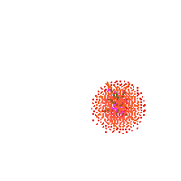

The Masters is a prestigious golf tournament scheduled on the first week of April every year, and it sparks the beginning of major play each year. It is played at the same location each year, Augusta National Golf Club, a private golf club in the city of Augusta, Georgia. It was started by Clifford Roberts and Bobby Jones, who wanted to build a golf course after his retirement from the game. The course first opened 84 years ago and has been maintained and restructured several times. The Masters is an official money event on the PGA Tour, the European Tour, and the Japan Golf Tour. The field of players is elite in a way because the tournament is an invitational event, so the field only includes the best players at the time. Players who win the Masters are automatically invited to play in the other three majors for the next five years and earn a lifetime invitation to the Masters.
The prestigious tournament has a variety of different traditions. Since 1949, the champion is awarded the famous green jacket, but it is stored away on club grounds. Any golfer who wins the event more than once uses the same green jacket awarded upon his initial win, unless he needs to be re-fitted with a new one. The Champions Dinner is always held on the Tuesday before each tournament, and is only open to previous champions and certain members of Augusta National. Legendary golfers, usually previous Masters Champions, have hit an honorary tee shot on the morning of the first round as a way to start up play. Caddies also are a part of the traditional ways of the Masters. The Masters requires caddies to wear a uniform of which is a white jumpsuit, a green Masters cap, and white tennis shoes. The defending champion always receives caddy number "1," and other golfers get their caddy numbers from the order in which they register for the tournament.
Tickets for the Masters are not expensive, but they are one of the rarest events to get tickets for. Surprisingly, practice rounds are often rare to get into as well. Tickets to the actualtournament are only sold to members of a patrons list, which is now closed. The waiting list for the patron list was opened in 1972 and closed in 1978. It reopened in 2000 and abruptly closed soon after. The difficulty in acquiring Masters tickets has made the tournament one of the largest events on the secondary-ticket market. Because the patron list is so minuscule, a majority of the tickets are delivered to the same group of fans each year. For the people that cannot attend the event, CBS has televised the Masters in the United States every year since 1956. The club mandates minimal commercial interruption, so it is convenient for viewers as they do not lose much golf during the tournament. The tournament has also been broadcasted on WestwoodOne radio since 1956; they provide short updates throughout the tournament, and lengthy segments towards the end of the tournament.

Of the 80 plus years the Masters have been played, there have been 51 different champions of the tournament, with 34 of those having only won once. The first winner of the Masters was Horton Smith in 1934. Jack Nicklaus has the most Masters wins, with six; renowned Arnold Palmer and Tiger Woods have won four each, and five golfers have won three titles at the Masters. Gary Player, from South Africa, was the first non-American player to win the tournament in 1961.
Year |
Winner |
Portrait of Winner |
Country |
Margin of Victory |
2017 |
Sergio Garcia |

|

|
Playoff |
2016 |
Danny Willett |

|

|
3 strokes |
2015 |
Jordan Spieth |

|

|
4 strokes |
2014 |
Bubba Watson |

|
|
3 strokes |
2013 |
Adam Scott |

|

|
Playoff |
Source: en.wikipedia.org